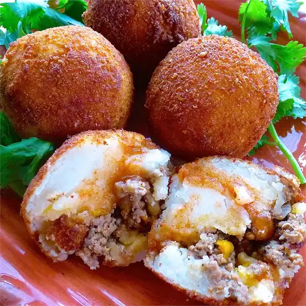

Home
Papa Rellena

Description:
Papa rellena (stuffed potato) is a popular street food in Peru. These deep-fried potato croquettes are filled
with a savory mixture of ground beef, onions, olives, and hard-boiled eggs. They are perfect as an appetizer or
snack, and are often served with aji sauce for dipping.
Ingredients:
- 4 large potatoes, peeled and cubed
- 1 ½ teaspoons salt, divided
- 1 tablespoon vegetable oil
- 1 green bell pepper, chopped
- ½ cup chopped onion
- 3 cloves garlic, minced
- 1 pound ground beef
- 4 teaspoons tomato paste
- 1 tablespoon distilled white vinegar
- 2 teaspoons ground cumin
- 1 teaspoon ground black pepper
- 4 large eggs
- 2 cups dry bread crumbs
- 1 cup all-purpose flour
- 1 quart vegetable oil for frying
Steps:
- Place potatoes into a large pot; cover with salted water. Bring to a boil over high heat, then reduce heat
to medium-low, cover, and simmer until tender, about 20 minutes. Drain and allow to steam dry for 1 to 2
minutes. Mash potatoes with 1/2 teaspoon salt in a bowl until no lumps remain. Set aside to cool to room
temperature.
- Meanwhile, heat vegetable oil in a large skillet over medium heat. Cook and stir green pepper, onion, and
garlic in the hot skillet until onion has softened and turned translucent, about 10 minutes.
- Increase heat to medium-high; stir in ground beef. Cook and stir until beef is crumbly and no longer pink.
Stir in tomato paste, vinegar, cumin, 1 teaspoon salt, and pepper until tomato paste has dissolved. Transfer
beef mixture to a bowl; allow to cool to room temperature.
- Line a baking sheet with plastic wrap or waxed paper; set aside. Beat eggs in a mixing bowl; set aside. Pour
bread crumbs and flour into separate, shallow dishes; set aside.
- Grab a handful of mashed potatoes (about 1/12 of the mashed potatoes); split into 2 equal portions. Form
each piece into a small bowl shape and fill each with beef mixture. Place halves together, seal edges, and
smooth to make a round ball. Repeat this step with remaining potatoes and beef mixture.
- Working one at a time, gently roll potato balls in flour to coat; shake off excess. Dip into beaten egg,
then roll in bread crumbs. Gently toss between your hands so any bread crumbs that haven't stuck can fall
away. Place breaded potato balls onto the prepared baking sheet. Refrigerate for 2 to 4 hours or freeze for
later use.
- Heat oil in a deep fryer or large saucepan to 350 degrees F (175 degrees C).
- Cook potato balls in hot oil in batches, using tongs to roll balls around as they cook to ensure even
browning, until crispy and golden brown, about 3 minutes per batch. Drain on a paper towel-lined plate.